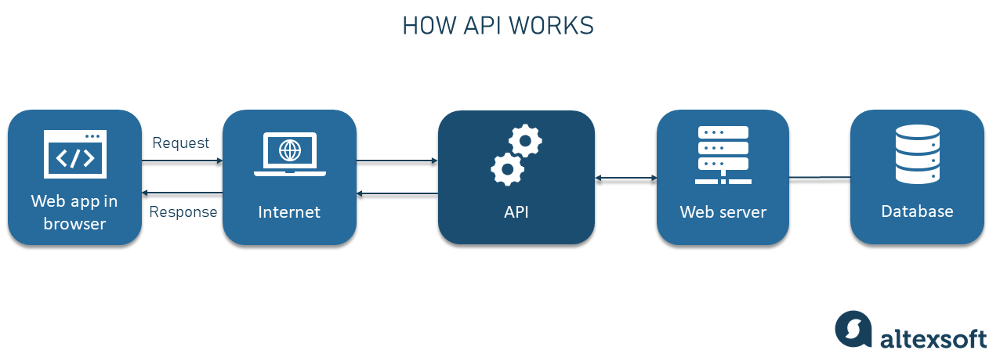

API - Application Programming Interface

API, uma sigla para Application Programming Interface (ou em português Interface de Aplicação de Programação).
Sua principal função é auxiliar da comunicação entre determinada programação e determinado Banco de Dados. Ela permite que o usuário
consulte dados, faça determinados cálculos ou aplicações sem a necessidade de ter que programar ou inserir os dados manualmente
no código.
Em uma API, a "Aplicação" do nome se refere a um software com uma função especifica. A Interface pode ser entendida como um elo
entre o computador solicitando ou enviando os dados para a API e a mesma fazendo os cálculos ou requisições necessárias. Esse elo é
realizado por meio de diversas solicitações e respostas, os dados ficam indo da API pra programação e vice-versa.
Na documentação de cada API, os criadores vão especificar como essas solicitações e respostas devem ser programadas no projeto.
